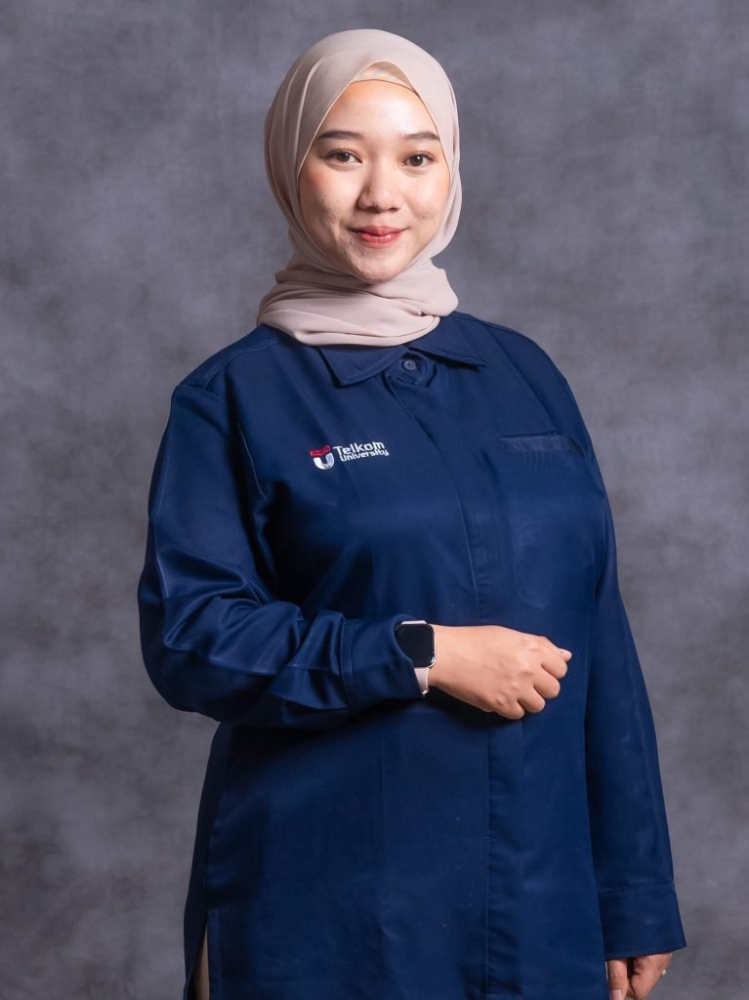

Akademisi berlatar belakang pendidikan linier Sarjana Komputer (S.Kom.) dan Magister Komputer (M.Kom.) di bidang Sistem Informasi, Fakultas Rekayasa Industri, Universitas Telkom (Terakreditasi "Unggul" BAN-PT). Memiliki pengalaman profesional lebih dari 3 tahun di perguruan tinggi terkemuka sebagai Staf Program Studi S1 Bisnis Digital (Februari 2026 – Sekarang) dan sebelumnya sebagai Staf Sekretariat Pimpinan / SEKPIM (2023 – 2026) di Fakultas Ekonomi dan Bisnis (FEB) Telkom University. Menguasai tata kelola akademik institusi, kurikulum Outcome-Based Education (OBE), penjaminan mutu akreditasi, serta aktif meneliti pada domain Green Information Systems (GEEI Framework), efisiensi energi kampus, integrasi sistem enterprise, dan transformasi bisnis digital.

Kesiapan integritas mengabdi sebagai akademisi profesional yang menyeimbangkan pengajaran kurikulum digital, penelitian berkelanjutan, dan tata kelola akademik.
Kompetensi mengajar mata kuliah Sistem Informasi dan Bisnis Digital berorientasi Outcome-Based Education (OBE), siap mentransfer wawasan teoritis dan studi kasus riil.
Fokus riset terapan pada Green Information Systems (GEEI Framework), efisiensi energi fasilitas pendidikan, dan digitalisasi penjaminan mutu soal ujian akademik.
Pengalaman praktis mengelola operasional Program Studi Bisnis Digital dan mengawal keprotokoleran pimpinan Dekanat FEB Telkom University.
Komitmen keilmuan yang konsisten dari jenjang Sarjana hingga Magister di institusi teknologi terkemuka Indonesia.
Merumuskan kerangka kerja Green Enterprise Energy Information (GEEI) untuk audit, monitoring, dan rekomendasi efisiensi konsumsi daya perangkat TI & fasilitas fakultas.
Membangun sistem web monitoring pengumpulan dan penelaahan soal ujian semester untuk Ketua Program Studi demi menunjang kepatuhan audit mutu akademik.
Integrasi konsep keberlanjutan lingkungan (Green IT) dan digitalisasi penjaminan mutu perguruan tinggi.
Tesis ini mengkaji permasalahan tingginya konsumsi energi listrik pada infrastruktur pendidikan tinggi. Melalui pendekatan Green Enterprise Architecture, dirancang framework GEEI yang memetakan konsumsi energi perangkat keras, server data center, dan fasilitas ruang kuliah dengan rekomendasi kebijakan hemat energi terukur.
Pemahaman menyeluruh mengenai alur administrasi akademik, regulasi kementerian, dan pelayanan Tridharma institusi.
Kesiapan mengajar mata kuliah inti pada Program Studi Sistem Informasi, Bisnis Digital, dan Manajemen Informatika.
Konsep dasar teknologi informasi, komponen sistem enterprise, dan pemodelan bisnis digital di era industri 4.0.
Kerangka kerja COBIT, ITIL, kebijakan tata kelola data, kepatuhan regulasi institusi, dan manajemen risiko TI.
Metodologi Waterfall, Agile Scrum, pemodelan proses bisnis BPMN, diagram UML, dan pengujian sistem aplikasi.
Strategi perdagangan elektronik, model CRM, pengalaman pelanggan digital, dan analisis saluran omni-channel.
Perencanaan ruang lingkup proyek digital, estimasi jadwal & biaya, manajemen risiko, serta evaluasi deliverable sistem.
Standar kode etik profesional TI, regulasi UU ITE, perlindungan data pribadi (PDP), dan kepemilikan hak cipta kekayaan intelektual.
Saya sangat terbuka untuk peluang kolaborasi akademik, pengajaran, penelitian bersama, dan pengabdian masyarakat.
Design of the GEEI Framework for Energy Efficiency at the Faculty of Economics and Business Telkom University
Kebutuhan daya listrik pada gedung institusi pendidikan tinggi meningkat seiring digitalisasi perkuliahan, server lokal, laboratorium komputer, dan penyejuk ruangan. Tesis ini merumuskan kerangka kerja Green Enterprise Energy Information (GEEI) yang memadukan audit inventarisasi beban daya komputasi dengan pedoman tata kelola COBIT 2019 dan standar arsitektur TOGAF. Framework ini menghasilkan pemodelan alokasi energi dinamis yang mampu menurunkan estimasi pemborosan energi fasilitas kampus hingga 18-24% per semester melalui otomasi kebijakan operasional perangkat.